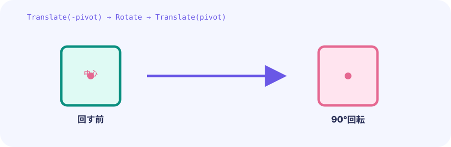
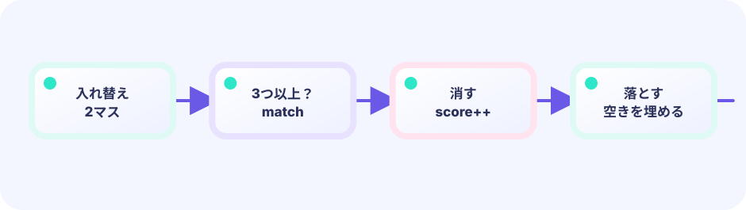

2次元の箱
7行×6列の配列は、画面と同じ並びで種類番号を覚えます。board[2][4]は上から3行目、左から5列目です。
var board [7][6]int★★☆☆☆ / PLAYABLE
盤面を行と列で管理し、辺を接する2個だけを選んで交換します。
PLAYABLE / WEBASSEMBLY
1個目、2個目の順にタップ。斜めや離れたマスは交換できません。PCでもクリックで遊べます。
はじめて読む人へ
2次元グリッドはboard[行][列]で読む方眼紙、隣接判定は列差+行差が1かを調べること。隣同士だけa,b=b,aで交換し、3個並びがなければ戻します。 PLAYABLEは『このページで実際に操作できる』という印です。
このページの1本
説明と次のコードを対応させてから、ゲームで変化を確かめよう。
adjacent := abs(ax-bx)+abs(ay-by)==1

DEEP DIVE / GRID & ADJACENCY
ピースをboard[行][列]に保存します。タップ位置から盤面の左上を引き、マス幅で割ると、選ばれた列と行が整数で求まります。
7行×6列の配列は、画面と同じ並びで種類番号を覚えます。board[2][4]は上から3行目、左から5列目です。
var board [7][6]int盤面の開始位置を引いて64で割ります。割り算の小数を捨てることで、同じマス内は同じ番号になります。
col := (x - originX) / cellSize列の差と行の差の絶対値を足します。合計1なら上下左右、2以上なら斜めか遠い場所です。
abs(ax-bx) + abs(ay-by) == 1TRY IT / CELL HIT TEST
四角を動かして重なりを観察します。ゲームでは各マスも同じ大きさの四角としてタップ位置を判定します。
TRY IT · GO
atk := Rect{x, y, w, h} // active only hurt := Rect{ox, oy, ow, oh} if overlaps(atk, hurt) { applyHit() }
—
IN THE REAL GAME
選んだ2点のマンハッタン距離が1なら、Goの多重代入で中身を入れ替えます。
distance := abs(a.x-b.x) + abs(a.y-b.y)
if distance == 1 {
board[a.y][a.x], board[b.y][b.x] =
board[b.y][b.x], board[a.y][a.x]
}WHY ROW & COL?
次のステップでは同じ行を左から右、同じ列を上から下へ調べられます。
WHY ADJACENT?
どこでも交換できず、となりだけだから並べ方を考える必要があります。
TRY NEXT
押したマスを覚え、指を離したマスが隣なら交換する操作へ変えてみよう。
FEEDBACK